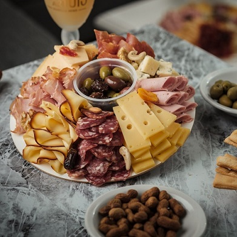
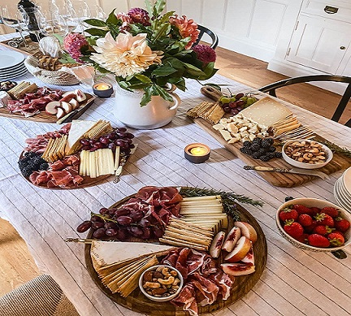
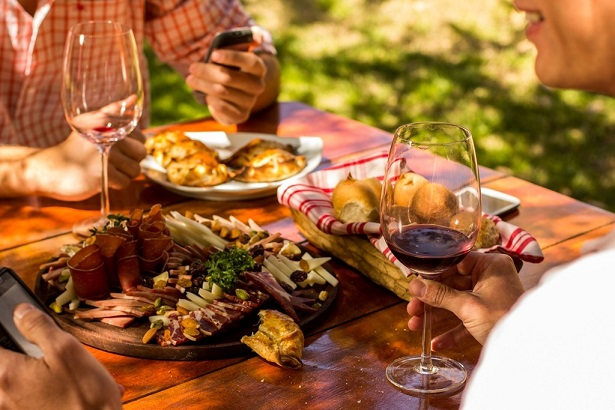

Biografía
Hola, soy José Cagnoni. Soy el dueño de "Le Pique", almacen de fiambre es un proyecto que refleja mi pasión por la buena comida y la atención al detalle. A lo largo de mi carrera, me he dedicado a crear experiencias culinarias únicas para mis clientes, combinando ingredientes frescos y técnicas tradicionales.


Proyectos
Almacen de fiambre
Rol: Dueño
Descripción: "Le Pique" es un negocio dedicado a ofrecer una selección exquisita de picadas y tapas, perfectas para cualquier ocasión. Nos enorgullecemos de utilizar ingredientes frescos y de alta calidad para crear combinaciones deliciosas que satisfacen a todos nuestros clientes.
